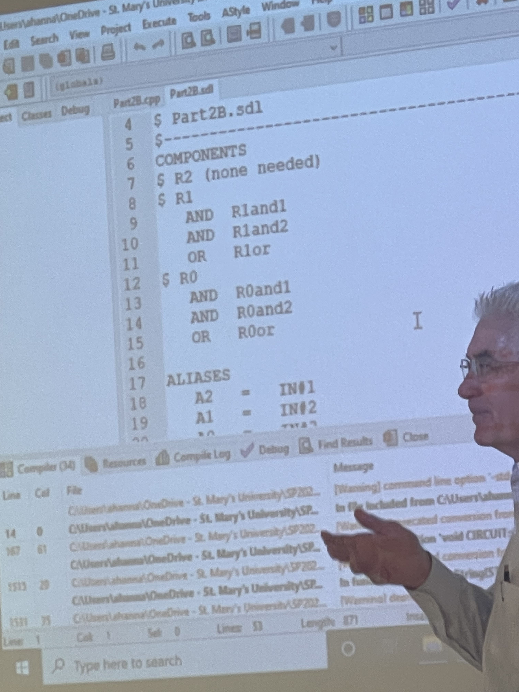

The Bachelor of Science in Computer Science Data Science Track is one of the many tracks offered hereafter
St. Mary's University Computer Science Program. This track focuses on data analysis, statistical methods,
and machine learning. Students will be presented with large data sets relating to the Computer Science field
and know how to analyze these sets to not only understand these sets but make predictions as well. Data
visualization and machine learning are the cornerstones of this degree track.